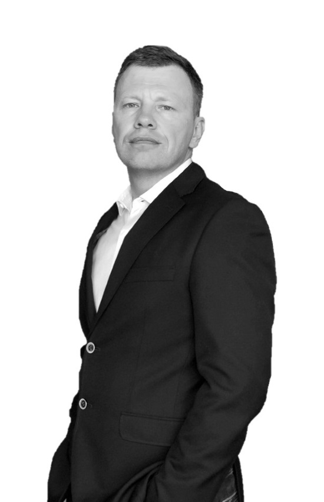

Торговая и многофункциональная недвижимостьRetail and mixed-use real estate
22 года управляю торговыми, многофункциональными объектами и бизнес-центрами: открывал «Парк Хаус» в Тольятти, вытащил из кризиса «Парк Хаус» в Казани, вывел ТРК «Лето» в Петербурге на продажу за 10 млрд ₽, переводил «Нордмолл» в Новосибирске из крытого рынка в ритейл-парк, строил Lynks Property Management в Узбекистане с нуля. Один контур: концепция → доход → эксплуатация → NOI.22 years running retail, mixed-use and office assets: opened Park House in Tolyatti, pulled Park House Kazan out of a crisis, took Leto Mall in St Petersburg to a RUB 10 bn sale, turned Nordmoll in Novosibirsk from an indoor bazaar into a retail park, built Lynks Property Management in Uzbekistan from zero. One loop: concept → revenue → operations → NOI.

ИнтерактивInteractive
Выберите тип объекта, стадию и главную задачу — покажу, в каком формате подключаюсь и что сделаем первым. Результат можно сразу отправить мне.Pick the asset type, the stage and the main task — I'll show which format fits and what we do first. You can send the result to me straight away.
Ответьте на три вопроса слева — здесь появится рекомендация.Answer the three questions on the left — the recommendation will appear here.
ПутьTrack record
Не консультант «со стороны», а управляющий, который сам открывал, принимал и вытаскивал объекты. Даты — из моего профиля LinkedIn, ключевые факты подтверждены публикациями.Not an outside consultant but a manager who personally opened, accepted and rescued assets. Dates are from my LinkedIn profile; key facts are confirmed by press coverage.
Портфель двух собственников: ТЦ 20 000 м², районный ТЦ 5 000 м², развлекательный центр 30 000 м², семейный парк 20 000 м² с тропическим кластером. Формирование управленческих команд, аудит PM и FM, стратегия развития с инвестиционными сценариями, подготовка к реконструкции, брокеридж с крупными операторами.
Two owners' portfolio: a 20,000 sq m mall, a 5,000 sq m district centre, a 30,000 sq m entertainment centre, a 20,000 sq m family park with a tropical cluster. Building management teams, PM and FM audit, development strategy with investment scenarios, reconstruction preparation, leasing with major operators.
Компания, команда и структура УК в Узбекистане с нуля. База арендаторов 0 → 2 000 ЛПР. Предварительная приёмка и дефектовка объектов (от 600 до 5 000 замечаний, из них 150–2 500 критичных), техническое открытие, стартап управления: штаб-квартира Агробанка, Modera Towers, курорт Chorvoq Darvozasi + Wyndham Garden. Консалтинг по БЦ, МФК, ТЦ и курортам от 45 000 до 200 000 м².
Company, team and PM structure in Uzbekistan from zero. Tenant base 0 → 2,000 decision-makers. Pre-acceptance and snagging (600 to 5,000 defects per asset, 150–2,500 of them critical), technical opening, management start-up: Agrobank HQ, Modera Towers, Chorvoq Darvozasi resort + Wyndham Garden. Consulting on offices, mixed-use, malls and resorts from 45,000 to 200,000 sq m.
Российский портфель торговой недвижимости до 1 млн м², из них более 500 000 м² ТРЦ, 12 объектов: ЦУМ Казань (35 000 м²), Бутово Молл (130 000 м²), Фили Град (25 000 м²), Мозаика (150 000 м²), Нордмолл (180 000 м²) и другие. Руководитель группы по коммерческой и эксплуатационной концепции Лахта 2 и 3.
Russian retail portfolio of up to 1M sq m, over 500,000 sq m of it shopping centres, 12 assets: TSUM Kazan (35,000 sq m), Butovo Mall (130,000), Fili Grad (25,000), Mozaika (150,000), Nordmoll (180,000) and others. Head of the commercial and operational concept group for Lakhta 2 and 3.
Реконцепция объекта 180 000 м² из оптово-розничного формата в ритейл-парк без остановки работы. Посещаемость ×10, доход ×3, OPEX ÷7.
Re-concept of a 180,000 sq m asset from a wholesale-retail format into a retail park without closing. Footfall ×10, revenue ×3, OPEX ÷7.
150 000 м², вакансия 40% на входе. Оборот арендодателя ×3, GLA +5%, рост NOI в кризис 2014. Объект продан за ~10 млрд ₽, сделка — финалист «Сделки года» CRE Moscow Awards 2018. Параллельно — проект ЦДМ на Лубянке.
150,000 sq m, 40% vacancy at the start. Landlord revenue ×3, GLA +5%, NOI growth through the 2014 crisis. Sold for ~RUB 10 bn; "Deal of the Year" finalist at CRE Moscow Awards 2018. In parallel — the Central Children's Store project on Lubyanka.
Репозиционирование после имиджевого кризиса. Посещаемость +30%, оборот +21%, дебиторская задолженность до 3%, привёл Inditex четырьмя брендами. 1-е место по популярности в Казани.
Repositioning after a reputational crisis. Footfall +30%, turnover +21%, receivables down to 3%, brought in four Inditex brands. No. 1 in popularity in Kazan.
Открытие с нуля в декабре 2005. Рост с 58 000 до 87 000 м², ритейл-парк с Castorama и Media Markt (2009). Штат УК 35 → 6 без потери эффективности. Лучший торговый объект города с 2006.
Opened from scratch in December 2005. Grew from 58,000 to 87,000 sq m; retail park with Castorama and Media Markt (2009). Management staff 35 → 6 with no loss of efficiency. Best retail asset in the city since 2006.
Ранее вице-президент «Галс-Девелопмент»
Former Vice President, Gals-Development
Ранее директор по торговой недвижимости Colliers
Former Director of Retail, Colliers
Сооснователь Lynks Property Management
Co-founder, Lynks Property Management
Рекомендации опубликованы вReferences are published on LinkedIn.
УслугиServices
Подключаюсь на любой стадии. Чем раньше — тем дешевле обходятся исправления.I step in at any stage. The earlier, the cheaper the corrections.
Ответ на вопрос «что здесь будет работать как бизнес» — до проектирования, с цифрами и сценариями масштаба.
The answer to "what will work here as a business" — before design, with numbers and scale scenarios.
Объект без операционных ошибок, заложенных на бумаге, и без переделок после открытия.
An asset without operating mistakes baked into the drawings — and no rework after opening.
Объект принят с закрытыми замечаниями, а не с «доработаем по ходу».
An asset accepted with defects closed out — not "we'll fix it as we go".
Открытие в срок с работающей операционной моделью — или объект, который снова даёт экономику. Примеры: «Лето» и «Нордмолл» в кейсах ниже.
An on-time opening with a working operating model — or an asset that delivers again. See Leto and Nordmoll in the cases below.
Единую систему управления, где PM и FM работают как один бизнес, и регулярную отчётность по KPI.
One management system where PM and FM work as a single business, with regular KPI reporting.
Форматы участияFormats of engagement
Взгляд со стороны без включения в операционку: диагностика, концепция, рекомендации с цифрами.
An outside view without stepping into operations: diagnostics, concept, recommendations with numbers.
Запускаю управление и эксплуатацию, ставлю регулярный менеджмент — и передаю вашей команде.
I launch management and operations, set up regular management — and hand over to your team.
Команда объекта, центрального офиса или собственника: сформировать, запустить, сопроводить, отпустить.
A team for the asset, the head office or the owner: recruit, launch, support, hand over.
Фактическое управление объектом, компанией или портфелем с ответственностью за экономику.
Hands-on management of an asset, a company or a portfolio, accountable for the economics.
КейсыCases
Вакансия 40% на входе, объект «списали». За 3 года — оборот арендодателя ×3, GLA +5%, рост NOI в кризис 2014. Продан за ~10 млрд ₽, финалист «Сделки года» CRE Awards 2018.
40% vacancy at the start, an asset "written off". In 3 years — landlord revenue ×3, GLA +5%, NOI growth through the 2014 crisis. Sold for ~RUB 10 bn, "Deal of the Year" finalist at CRE Awards 2018.
Крытый рынок на 4 300 мест с трафиком 4–5 тыс. в день. Реконцепция в суперрегиональный ритейл-парк без остановки объекта: посещаемость ×10, доход ×3, OPEX ÷7.
An indoor bazaar of 4,300 units with 4–5k daily footfall. Re-concept into a super-regional retail park without closing: footfall ×10, revenue ×3, OPEX ÷7.
Открытие в декабре 2005, расширение до ритейл-парка с Castorama и Media Markt в 2009. Штат УК сокращён с 35 до 6 человек без потери эффективности. Лучший торговый объект города с 2006.
Opened in December 2005, expanded into a retail park with Castorama and Media Markt in 2009. Management staff cut from 35 to 6 with no loss of efficiency. Best retail asset in the city since 2006.
Выход из имиджевого кризиса за полтора года: посещаемость +30%, оборот +21%, дебиторка до 3%. Привёл Inditex: Zara, Bershka, Pull&Bear, Stradivarius. 1-е место по популярности в городе.
Out of a reputational crisis in 18 months: footfall +30%, turnover +21%, receivables down to 3%. Brought in Inditex: Zara, Bershka, Pull&Bear, Stradivarius. No. 1 in popularity in the city.
12 объектов, более 500 000 м² ТРЦ: ЦУМ Казань, Бутово Молл, Фили Град, Мозаика, Нордмолл. Руководитель группы по коммерческой и эксплуатационной концепции Лахта 2 и 3.
12 assets, over 500,000 sq m of shopping centres: TSUM Kazan, Butovo Mall, Fili Grad, Mozaika, Nordmoll. Head of the commercial and operational concept group for Lakhta 2 and 3.
Компания и команда с нуля, база арендаторов 0 → 2 000 ЛПР. Приёмка и стартап управления: штаб-квартира Агробанка, Modera Towers, курорт Chorvoq Darvozasi + Wyndham Garden. Дефектовка от 600 до 5 000 замечаний на объект.
Company and team from zero, tenant base 0 → 2,000 decision-makers. Handover and management start-up: Agrobank HQ, Modera Towers, Chorvoq Darvozasi resort + Wyndham Garden. Snagging of 600 to 5,000 defects per asset.
В прессеPress
Первый шагFirst step
Первая встреча — 60 минут, онлайн или на объекте. Определим ключевые риски, подходящий формат и следующий управленческий шаг. География не имеет значения: Россия, Узбекистан, Казахстан, другие страны.The first meeting is 60 minutes, online or on site. We define key risks, the right format and the next management step. Geography doesn't matter: Russia, Uzbekistan, Kazakhstan or elsewhere.